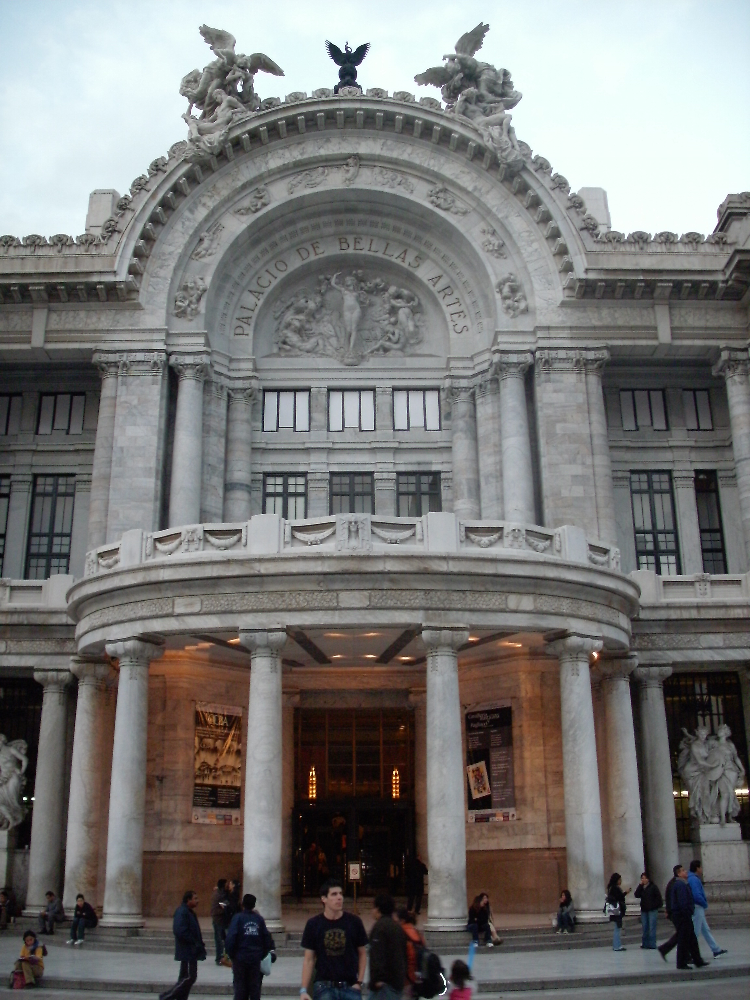
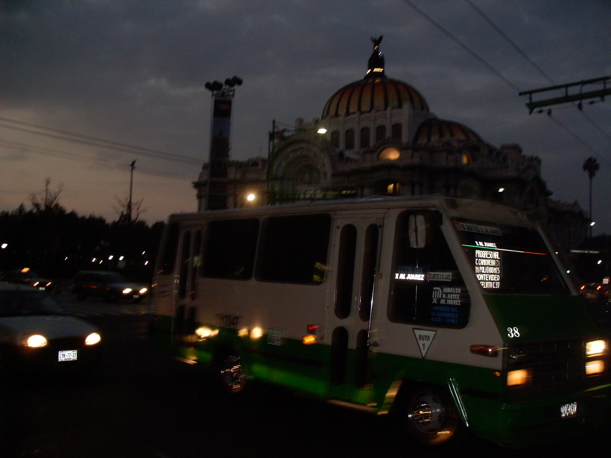
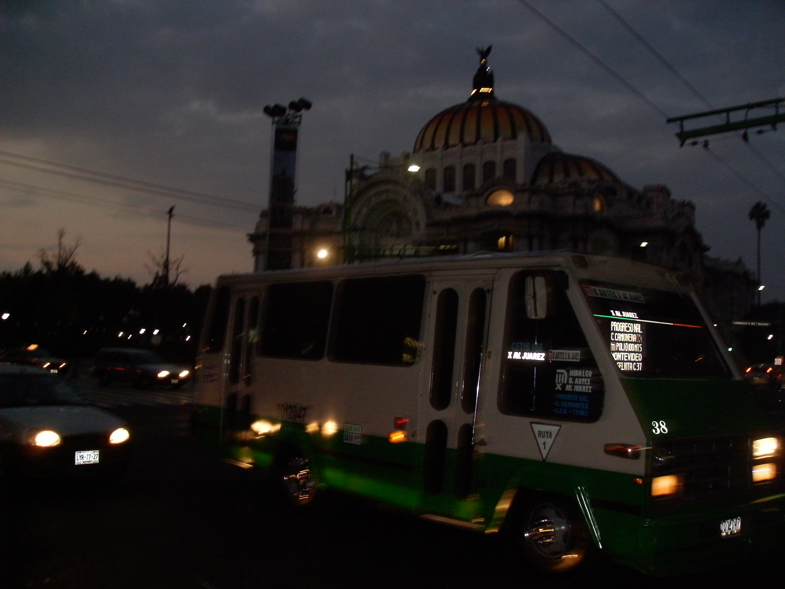

Palacio de Bellas Artes
The Palacio de Bellas Artes (Palace of Fine Arts) is the most important cultural center in Mexico City as well as the rest of the country of Mexico. It is located on the west side of the historic center of Mexico City next to the Alameda Central park.
Maximum forum of art and culture in Mexico, the Palacio de Bellas Artes surprises Mexicans and foreigners alike with its ostentatious architecture, in which two styles come together in a harmonious and elegant fashion: the Art Nouveau of its exterior with the Art Deco of its interior.
In this magnificent building a great number of artistic and cultural activities take place; from painting, sculpture and architecture exhibitions, to its famous opera presentations and classical music concerts, as well as classic ballet, the folkloric ballet and National Symphonic Orchestra.
The ballet performs in the theatre twice a week and is a spectacle of pre and post Hispanic dance of Mexico. A typical program includes Aztec ritual dances, agricultural dances from Jalisco, a fiesta in Veracruz and a wedding celebration, all accompanies by mariachis, marimba players and singers. Regular annual events include the "Premio Quorum" for Mexican designers in graphic and industrial materials and the "Premios Ariel" for Mexican films.
| Address: | Avenida Juárez Esq. Eje Central Centro Histórico Distrito Federal, México |
| Schedule: | Monday - Closed Tuesday - Sunday | 10:00 a.m. to 6:00 p.m. |
| Website | www.palacio.bellasartes.gob.mx | E-mail address: | gpba.palaciodebellasartes@inba.gob.mx |
The Museo del Palacio de Bellas Artes (Museum of the Palace of Fine Arts) is the organization that takes care of the permanent murals and other artwork in the building as well as arrange temporary exhibits. These exhibits cover a wide range of media and feature Mexican and international artists, focusing on classic and contemporary artists.
The Palacio de Bellas Artes has been called the "Cathedral of Art in Mexico" and is considered to be the most important theatre and the most important cultural center in Mexico. The building is administered by the Instituto Nacional de Bellas Artes of the federal government. The palace receive on average 10,000 visitors each week.
The plaza located outside the main entrance deserves a special mention; in it, the famous ‘Pegaso’ sculptures can be appreciated contrasting with the modern beauty of the neighboring Latin-American Tower.
 
Sign up!